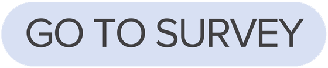

# example syntax for enabling the AAGI R-Universe
options(repos = c(
aagi_aus = "<AAGI R-Universe URL>",
CRAN = "https://cloud.r-project.org"
)) AAGI Impact Survey: Link Generation Guide
Service & Support
Surveys
A comprehensive guide to using the
create_survey_url() function. Learn to generate tailored survey links that automatically track metadata and provide a seamless participant experience, driving the thoughtful responses necessary for high-quality data collection.
What is a customised survey link?
A customised survey link is a url with relevant metadata we are able to provide including the type of support and output being delivered, which AAGI node provided the support and what type of organisation the recipient is affiliated with, embedded directly within it.
Streamlining url customisation with the create_survey_url() Function
While you could manually append parameters to a URL, the create_survey_url() function is designed to make this process simple, fast, and error-proof.
The function assists your workflow by:
Automating the Syntax: It correctly formats the complex URL strings required for Qualtrics “Embedded Data” so you don’t have to manually type out keys and values.
Ensuring Consistency: It provides a standardized way to enter details, reducing the risk of broken links or missing data.
Simplifying Delivery: Once the details are provided, the function automatically copies the completed URL to your system clipboard, ready to be pasted directly into your email or project output.
How to run the function:
The function provides two methods for generating a completed URL. In both cases, the final URL is automatically copied to your system clipboard for immediate use in your correspondence.
Interactive Mode: Run the function without arguments to open a guided console menu.
Scripted Mode: Supply all arguments directly within your R script.
Survey Purpose
The AAGI Collaborator Survey is designed to help us understand the impact our Service & Support activities have within the Australian grains research development and extension (RD&E) sector. It also provides collaborators with a straightforward way to provide feedback to support our ongoing improvement.
Target recipients
This survey is intended for individuals or groups receiving experimental design or analysis outputs through an AAGI Service and Support collaboration. The expectation is that going forward, every output delivery of this type should also provide the opportunity for collaborators to provide feedback.
Who is responsible for generating and sending surveys?
The AAGI staff member delivering the associated output is responsible for generating and providing a properly customised survey link to their recipient. This ensures clarity on which specific output and project the survey questions are asking about , and receiving a participation request from someone they have a connection with can help increase engagement and response rates.
Timing of survey delivery
Feedback is most accurate when it is collected while the experience or work is still fresh in participants’ minds. One option is to include an appropriately customised survey link in the same email as the outputs. This allows recipients to locate the survey link after they have had time to use the work, while clearly linking it to the specific outputs being evaluated. Ultimately, it is up to you and your team to decide what works best for your workflow, but survey links should be sent no more than seven days after output delivery.
Surveys should not be delayed until the end of a project and combined into a single request, as this reduces the accuracy and usefulness, of the data.
The strategic value of customisation
embedding this metadata is not just a courtesy; it is a critical step in maintaining professional standards and data integrity.
Controls Question Logic: The embedded data triggers “Display Logic” within the survey, ensuring respondents only see questions relevant to their specific collaboration.
Adheres to ethical research practice: Asking collaborators to provide information we already have undermines the ethical principles of respect and beneficence - maximizing benefit while minimizing time and risk to participants.
Protecting Relationships: Research shows that the overall care evident in a survey’s design shaped by things like wording, structure, clarity and length are experienced as social cues about the intentions, competence, and respect of those responsible for them. in this way, thoughtful and considered surveys are not only the right thing to do, they also help protect our professional relationships and organisational reputation.
protecting future research and researchers: research evidence shows that because negative experiences tend to generalise, poorly designed surveys not only effect engagement and responses to that survey and researchers, the experiences tend to extend beyond that research and research group to cause reduced engagement in any future research witht not only the original group but with any surveys and any researchers more broadly
Enhancing data quality: Research evidence shows that the lower the lower the effort required to complete the survey and the higher the benefit of participating (as survey burden decreases), respondent engagement, and effort put into thoughtful, accurate and complete responses increases. eliminiating unnecessary effort while ensuring survey questions are as targeted as possible and are linked to as much important relevant metadata as possible helps ensure the results are as useful as possible for generating useful insights
allowing for more advanced insights: we could just not include this information by not asking them to provide it and not putting it in the url but doing this means that this information is directly linked with the responses they give to other survey questions so that we can test and view patterns across groups
If you notice any issues or have suggestions that could improve the structure, wording, or workflow of the survey, or if you have ideas about how we might act on our findings and present or communicate them along with our actions with collaborators in the future, please share them in an email using the subject line ‘AAGI Impact Survey’ to CBADA@curtin.edu.au.
Installing the {AAGISurvey} package
The {AAGISurvey} package is hosted in the AAGI R-Uiverse and it contains the create_survey_url() function developed to help streamline generating the correct URL for each output delivery.
Step 1: Enable the AAGI R-Universe
To install the package, you first need to enable the AAGI R-Universe in your R session. You only need to do this once. If you have already enabled the AAGI R-Universe for another package, you can skip this step.
The URL for the AAGI R-Universe can be found via the AAGI-Aus GitHub.
Once you have the URL, you can enable the universe using:
Step 2: Install the package
install.packages("AAGISurvey") Step 3: Load the package
library(AAGISurvey)Once installed, you only need library(AAGISurvey) in future sessions.
Step 1. Run the function
You can run create_survey_url() in one of two ways:
- Scripted – provide all required arguments directly in your script.
- Interactive – run the function with no arguments and follow the prompts in the console.
Scripted example:
library(AAGISurvey)
# Create a survey URL for design support for small plot trial for a government agency carried out by AAGI Cu
url <- create_survey_url(
support_type = "S_D",
design_type = "D_SP",
analysis_type = ,
aagi_node = "CU",
organisation_type = "O_GRO"
)Interactive example
library(AAGISurvey)
url <- create_survey_url() Both approaches will:
- Generate a Qualtrics survey URL containing the correct metadata
- Print a summary of your selections
- Copy the URL automatically to your clipboard for easy pasting into an email or other message
Viewing full documentation
To view full documentation for create_survey_url(), including code descriptions and examples, press F1 in RStudio or type the following in any R session:
?create_survey_url
# or
help("create_survey_url")Step 2. Verify information
Carefully check the printed summary to ensure all details match the collaborator and the outputs provided.
Step 3. Draft your recipient’s email and link the URL
The template below is provided as a base. You can include the survey request in the same email as the outputs or send it separately. Feel free to adjust the wording to fit your recipient, context, and workflow. At a minimum, update the recipient name, the type of output shared, and your name. Link the generated survey URL to the “Go to survey” button, and optionally include the full URL as a backup.
Draft email template
Note
Dear [RecipientName],
We recently shared a [OutputType] with you and would greatly appreciate it if you could take a few minutes to complete this short survey about your experience collaborating with us. The survey should take less than five minutes to complete.

Your feedback is valuable. It helps us improve the quality of our work, strengthen collaboration, and guide how we can best support your needs.
Thank you for taking the time to share your thoughts.
Kind regards,
[YourName]
Step 4. Schedule sending (if not included with outputs)
If you are not including the survey request in the same email as the outputs, schedule the email to be sent during work hours and within seven days of output delivery.
Scheduling in Outlook:
- Windows Desktop: Options → Delay Delivery → Do not deliver before → set date/time → Close → Send
- Mac Desktop: Arrow next to Send → Send Later → select date/time → Send
- Outlook Web: Arrow next to Send Later → pick date/time → Send
Step 5. Save a copy of the email for project records
Once the email is drafted or sent, save a copy in the ’Correspondence’ folder of the associated collaboration project on the R-drive. Saving a copy ensures a complete record of the communication is kept in the project folder for future reference and accountability.